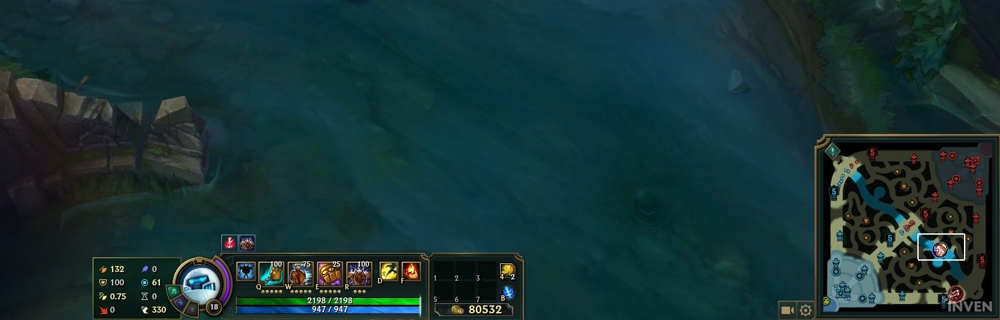

01 / PATCH BASELINE
Master+ purchase routes
What strong players buy, and in which order, on the current patch.
WinCon compares coherent build routes against the match you are actually playing, then shows what changed and why. Draft, live game and review — handled locally on your PC.
FREE · SOURCE AVAILABLE · NO ACCOUNT · NO PROJECT SERVER

The highest raw win rate is not always the right answer. WinCon protects the champion’s functional core, then adjusts the route when the current match gives it a reason to.
01 / PATCH BASELINE
What strong players buy, and in which order, on the current patch.
02 / LIVE CONTEXT
Compositions, items, levels, gold, objectives and current threats you can already see.
03 / PERSONAL SIGNAL
Role and champion tendencies influence the route only when the sample supports it.
RANKED OUTPUT / EXPLAINED
Draft support reads only the picks the client exposes. It weighs ally fit, enemy pressure, your own results and the Master+ baseline — then turns the enemy comp into an initial buy plan.

Ranks champions you actually play against the draft already on screen.
Summarises the pressure and gaps created by the confirmed picks.
Protects the functional core and holds situational defence for the slot where it belongs.
The overlay sits around your HUD instead of taking over the right edge. The companion stays docked and raises a concise, visual bubble when the next decision materially changes.
Drag from the grip, scale it from 70–150%, and recognise the next item at a glance.



These are full visual identities, not simple palette swaps. Surfaces, typography, motion and companion change together; the recommendation engine does not.
HexiElectric navy, signal pink and economy gold.
SombraCarbon black, hard geometry and restrained crimson.
KohakuQuiet washi, plum ink and sakura accents.
WinCon turns stored matches into concrete signals: deaths by phase, gank exposure, vision, objective cost while dead, participation, champion form and recurring weak points.


Every screen answers one of three questions: what is the plan, what changed, and what should improve next.
Starter, boots and functional spikes are protected before matchup adaptations can take over.
Gold, nearby breakpoints and the value of waiting are considered together; overlay advice shows the item icon and name.
Visible deaths, objective timing and clear level or item leads become conditional windows — never hidden gold or cooldown tracking.
Aggregate purchase usage and order create the starting route for the current patch.
Your stored performance can shift confidence without overpowering a weak sample.
Every recommendation carries the reasons that earned its position in the route.
A disabled-by-default layer for rephrasing existing signals. It is not required and does not power the core decision engine.
No third-party tool can promise account outcomes. WinCon instead keeps a small, auditable surface and treats Riot policy constraints as product requirements.
“If you cannot see it in the match, it cannot drive live advice.”
The live engine consumes the same state the player can read on screen. It does not create a hidden-information advantage.
No enemy cooldown or ultimate timers, no memory reading, no packet sniffing and no replay reverse engineering.
WinCon respects the identities and fields the client hides.
Personal history and settings live in SQLite on your PC. There is no WinCon account or analytics backend.
The implementation is readable on GitHub under PolyForm Noncommercial 1.0.0.
The desktop app degrades gracefully with LoL closed, the client open, champ select active or a live game in progress.
Get the latest per-user Windows setup from Releases. No administrator rights are required.
WinCon detects client, draft and live-game phases automatically. The main local features need no API key.
Use the full workspace on a second display, or the movable overlay in borderless/windowed mode.
About history sync: private development use can be configured with an appropriate Riot API key. Public distribution requires Riot product registration and a production key; the live local workspace remains usable without one.
Clear answers about account risk, data, cost and the optional pieces.
No third-party tool can guarantee account outcomes. WinCon enforces screen-visible live inputs, no enemy cooldown tracking, no ranked draft de-anonymization, and no memory or packet access. Its isolated local LCU integration is unsupported by Riot and may change. Review the current Riot developer policies before public distribution.
The installer is not digitally code-signed because signing certificates have a recurring cost and this is a zero-cost project. SmartScreen commonly warns for unsigned or low-reputation builds. The source is available, and you can build it yourself.
Yes: no subscription, ads, paid services or data collection. The source is available for noncommercial use under the PolyForm Noncommercial 1.0.0 license; that is not the same as an OSI open-source license.
WinCon has no project server and sends no telemetry. The local game and client APIs remain on your machine. When you explicitly configure history sync, the app talks directly to Riot’s Web API; the resulting history is stored locally.
Not for live local features, draft detection or the main in-game workspace. Match-history sync in a private development setup needs an appropriate key. A public consumer build would need an approved production-key path.
Use League in borderless or windowed mode for the overlay. Exclusive fullscreen does not reliably support desktop overlays. The main app can still run on another display.
No. The deterministic engine, live signals and reports work without AI. The local coach is experimental, optional and disabled by default; it only rephrases signals WinCon already produced.
WinCon is a source-available, zero-cost Windows project. Download the latest build or inspect every decision boundary on GitHub.